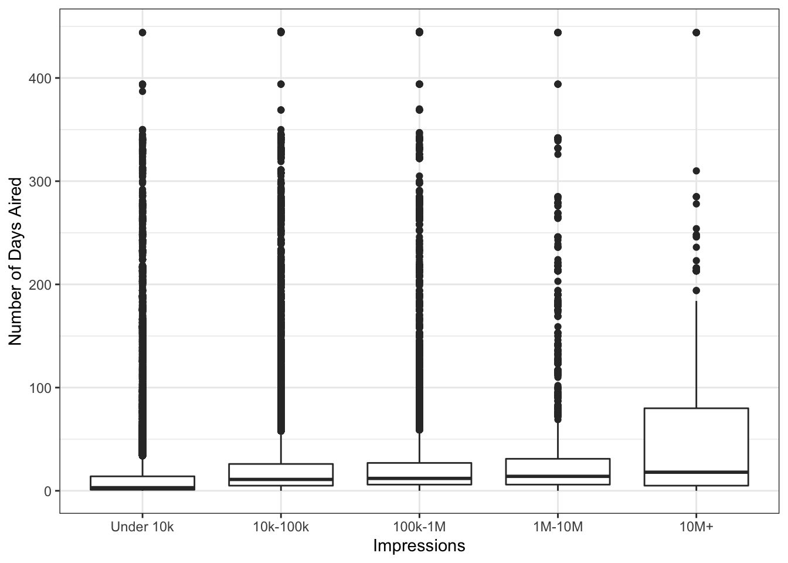

Predicting Impressions
9/2/2019
Start-up
The goal is to build a model that predicts “impressions”, or the number of people the ad reached, using relevant advertisement covariates. I’ll use political advertisement spending data released by google. The dataset contains over 200,000 unique ads since June 2018 with relevant metadata including number of impressions as a ordinal categorical variable. Intially, I need to figure out useful predictors in the model by investigating the univariate distributions and basic bivariate relationships.
#find date when data was downloaded last
dwnld_date <- file.info("~/Desktop/google_ads/data/google-political-ads-transparency-bundle/")$atime %>% as.Date()
#if not downloaded in past 7 days, re-download
if(dwnld_date < Sys.Date() - 7){
#set url and file destination
url <- "https://storage.googleapis.com/transparencyreport/google-political-ads-transparency-bundle.zip"
dest <- "~/Desktop/google_ads/data/google_ads.zip"
unzip_dir <- "~/Desktop/google_ads/data"
#download ads data and save to central location
download.file(url=url, destfile = dest, method = "curl")
unzip(dest, exdir = unzip_dir)
}
#read in data
dt <- read_csv("~/Desktop/google_ads/data/google-political-ads-transparency-bundle/google-political-ads-creative-stats.csv")
#relevant variables
vars_keep <- c("Ad_Type", "Regions", "Advertiser_ID", "Date_Range_Start", "Date_Range_End",
"Num_of_Days", "Impressions", "Spend_Range_Min_USD", "Spend_Range_Max_USD")
#subset to variables of interest and create useful variables
dt <- dt %>%
dplyr::select(vars_keep) %>% #keep relevant variables
filter(!is.na(Num_of_Days) & !is.na(Regions) & !is.na(Ad_Type)) %>%
mutate(startYear = substr(Date_Range_Start,1,4), #variable indicating year ad started
Region = ifelse(grepl("EU", Regions), "EU", "US") %>% as.factor(), #create cleaner regions variable
month_year = format(as.Date(Date_Range_Start), "%m-%Y"),
week_start = floor_date(as.Date(Date_Range_Start), unit = "week"),
week_end = floor_date(as.Date(Date_Range_End), unit = "week"),
cost_cat = paste0(Spend_Range_Min_USD, "-", Spend_Range_Max_USD) %>%
factor(levels=c("0-100", "100-1000", "1000-50000", "50000-100000", "100000-NA"),
labels = c("0-100", "100-1k", "1k-50k", "50k-100k", "100k+")),
Spend_Range_Min_USD = as.factor(Spend_Range_Min_USD),
Ad_Type = as.factor(Ad_Type),
Impressions = factor(Impressions,
levels = c("≤ 10k", "10k-100k", "100k-1M", "1M-10M", "> 10M"),
labels = c("Under 10k", "10k-100k",
"100k-1M", "1M-10M", "10M+")))
#filter(regions=="US") #only include US data
dt <- dt %>%
mutate(
case_when(
cost_cat=="100000-NA" ~ "100k+"
)
)Load in the dataset and prep it for visualizing and modeling.
Data Exploration
Impressions
#impressions
ggplot(dt, aes(Impressions)) +
geom_bar() +
geom_text(stat = 'count', aes(label = percent(..count../nrow(dt)), vjust = -0.2)) +
theme_bw()
Most ads are classified under the “Under 10k” category, indicating an imbalanced classification problem. Due to this imbalance, I’ll plot impression counts on the log scale to observe differences at smaller frequecies.
Ad cost
One might presume that money spent for an ad would be an excellent predictor of impressions, given that that most tech platforms follow an advertising model of more money spent = more exposure. Google provides dollars spent as a categorical variable of 5 bins. Let’s see how well ad dollars spent and number of impressions correlate.
table(dt$Impressions, dt$cost_cat)##
## 0-100 100-1k 1k-50k 50k-100k 100k+
## Under 10k 206644 10295 696 0 0
## 10k-100k 22267 15681 4734 0 0
## 100k-1M 2934 6878 8018 0 0
## 1M-10M 22 656 2247 0 0
## 10M+ 0 0 284 0 0Since “ad cost” and “impressions” variables are both ordinal, 5-bin variables, if one was to map the categories to each other on 1 to 1 basis, we could calculate accuracy of a model that solely used “ad cost” to predict “impressions”. And turns out, it would be correct 61.4% of the time! This tells us two things: money spent on ads is a primary driver of total impressions but it’s not the only driver. Maybe we can find other predictors in the data set that could improve our future model’s accuracy.
Temporal trends
#time series plot of ad counts across impression category
dt %>%
group_by(date=as.Date(week_start), Impressions) %>%
summarize(weekly_ad_count=n()) %>%
ggplot(aes(date, weekly_ad_count, color=Impressions)) +
geom_point() +
geom_smooth(method = "loess") +
xlab("Date") +
ylab("Number of Ads (on log scale)") +
geom_vline(xintercept = as.Date("2018/11/06"), linetype=4) +
geom_text(aes(x=as.Date("2018/10/28"), y=9400, label=" Midterm"),
colour="blue", angle=90, text=element_text(size=11)) +
scale_y_log10() +
scale_x_date(labels = date_format("%m/%Y"), breaks = date_breaks("2 month")) +
scale_color_discrete(name = "Impressions") +
theme_bw()
In order to assess whether date of ad may be related to number of impressions, I aggregated the number of ads by week of ad start date and impression category. Then I plotted the number of ads across the full time series, colored by impression category, and fit a loess smoother through each. The loess, in this case, is a helpful way to explore time trends in the data.
There does seem to be some relationship, albeit non-linear, between number of ads and ad start date. Ad counts, regardless of impression category, appear to increase up the the 2018 midterm election. However, the time trend is similar across the different impression categories-note the similar shapes for each loess curve. In other words, the relative fraction each impression category comprises, with reference to the impression envelope, does not change much over time. So I’ll hold off on including a time variable in my model for now.
Impressions by region
#plot impression counts by region
ggplot(dt, aes(Impressions, fill=Region)) +
geom_bar(position = "dodge") +
scale_y_log10() +
ylab("Count (log 10 scale)") +
theme_bw()
Above is a bar chart showing counts of each impression category across the two regions: EU and US. Note that these frequencies were plotted on a log 10 scale in order to illustrate relative frequencies within the lower frequency categories (100k-1M impressions, etc). The EU has fewer ads within each category and appears to have a greater proportion of its ads with >10k impressions compared to the U.S., which indicates that this variable may be a useful covariate in the model.
Impressions by ad type
#plot impression counts by type of ad
ggplot(dt, aes(Impressions, fill=Ad_Type)) +
geom_bar(position = "dodge") +
scale_y_log10() +
ylab("Count (log 10 scale)") +
theme_bw()
This figure shows counts (on log 10 scale) of ads across impression category for each type of ad. “Image” ads remain the most popular type across impression category, while “Text” ads significantly decrease as number of impressions increase, relatively to other ad types.
Days ad aired
dt %>%
mutate(days_running=difftime(Date_Range_End, Date_Range_Start, units = "days")) %>%
ggplot(aes(Impressions, days_running)) +
geom_boxplot() +
ylab("Number of Days Aired") +
theme_bw()
This figure shows box and whiskers of number of days ad was aired across impression category. While these data do look noisy, we see indication of a potential trend: as ad air time increases so does the number of impressions.
Based on the exploratory plots and tables, the covariates we’ll use to predict impressions are: cost of the ad, ad type (text, video, or image), region the ad aired (U.S. or E.U.), and number of days the ad aired.
Modeling
#model reponse and covariates
response <- "Impressions"
covariates <- c("Num_of_Days", "Region", "Ad_Type", "cost_cat")
#create training data frame
set.seed(2^9)
train <- sample(c(TRUE, FALSE), nrow(dt), rep=TRUE)
dt.train <- dt %>%
dplyr::select(response, covariates) %>%
filter(train & !is.na(cost_cat))
dt.test <- dt %>%
dplyr::select(response, covariates) %>%
filter(!train & !is.na(cost_cat))
#extract the testing response and predictors for prediction
x.test <- dt.test %>% dplyr::select(covariates)
y <- dt.test %>% dplyr::select(response)
#create standard formula object
mod.formula <- as.formula(paste(response,
paste(covariates, collapse = "+"), sep = " ~ "))We’ll model impressions using 3 different methods: logistic regression and two tree-based methods. Logistic is helpful as a first pass since it generally performs well and produces interpretable coefficients. The data will be ramdomly split into a training and testing set for evaluation of model performance.
Multinomial logistic regression
#Build the model
model1 <- vglm(formula = mod.formula,
data = dt.train, family = "multinomial")
#extract model summary
#summary(model1)
#Predict using the model
probability <- predict(model1, x.test, type="response")
dt.test <- dt.test %>%
mutate(predicted_cat = apply(probability, 1, which.max),
predicted_name = case_when(predicted_cat==1 ~ "Under 10k",
predicted_cat==2 ~ "10k-100k",
predicted_cat==3 ~ "100k-1M",
predicted_cat==4 ~ "1M-10M",
predicted_cat==5 ~ "10M+"),
predicted_name = factor(predicted_name,
levels = c("Under 10k", "10k-100k",
"100k-1M", "1M-10M", "10M+")))
#Accuracy of the model
mtab <- table(dt.test$predicted_name, dt.test$Impressions)
confusionMatrix(mtab)## Confusion Matrix and Statistics
##
##
## Under 10k 10k-100k 100k-1M 1M-10M 10M+
## Under 10k 107009 11450 1420 20 0
## 10k-100k 1613 8482 2630 163 1
## 100k-1M 8 1435 4761 1073 121
## 1M-10M 0 0 62 160 17
## 10M+ 0 0 0 0 0
##
## Overall Statistics
##
## Accuracy : 0.8575
## 95% CI : (0.8556, 0.8593)
## No Information Rate : 0.7736
## P-Value [Acc > NIR] : < 2.2e-16
##
## Kappa : 0.5577
##
## Mcnemar's Test P-Value : NA
##
## Statistics by Class:
##
## Class: Under 10k Class: 10k-100k Class: 100k-1M
## Sensitivity 0.9851 0.39697 0.53657
## Specificity 0.5946 0.96298 0.97995
## Pos Pred Value 0.8925 0.65808 0.64355
## Neg Pred Value 0.9210 0.89897 0.96909
## Prevalence 0.7736 0.15216 0.06319
## Detection Rate 0.7620 0.06040 0.03390
## Detection Prevalence 0.8538 0.09179 0.05268
## Balanced Accuracy 0.7898 0.67998 0.75826
## Class: 1M-10M Class: 10M+
## Sensitivity 0.112994 0.0000000
## Specificity 0.999432 1.0000000
## Pos Pred Value 0.669456 NaN
## Neg Pred Value 0.991040 0.9990101
## Prevalence 0.010084 0.0009899
## Detection Rate 0.001139 0.0000000
## Detection Prevalence 0.001702 0.0000000
## Balanced Accuracy 0.556213 0.5000000The confusion matrix shows the model predictions (row-wise) stacked against the actual data (column-wise). If the model fit the data perfectly, we’d only see values along the diagonal and would see zeros everywhere else. The overall accuracy is 85%, indicating that the model correctly labels the testing data 85% of the time. Sensitivity (we’ll use “recall”) and specificity varies across the impression categories, as we’d expect. When predicting “Under 10k” impressions, a recall of 0.98 indicates that the model get 98% of the actual “Under 10k” impressions correct. The relatively poor specificity indicates that the model correctly predicts that an ad will NOT get “Under 10k” impressions 63% of the time. We see the opposite result from the “10M+” impressions category. Because we have an imbalanced classification problem with so few “10M+” impression ads, the model can predict that an ad will not get “10M+” impressions with 99.99% confidence. However, recall of 0.13 reveals that 87% of actual “10M+” impression ads are incorrectly labeled by the model.
Model evaluation can be based on overall accuracy of the model or on more specific metrics like precision or recall, depending on the research question. For instance, consider that the goal of many political action committees (PAC) is to reach as many people as possible using as little money as possible. In order to figure out how to do this, they could start with looking at what covariates are conditionally associated with number of impressions from the logistic model coefficients. We can see that even controlling for ad cost, an ad with longer air time tends to achieve more impression. Going even further, they could build a model that optimizes for their main goal-accurately predicting ads with millions of impressions or recall. As we noted, the logistic model above has poor recall for impression categories of particular interest as it correctly labels a “1-10M” impression ad only 10% of the time and a “10M+” impression ad only 13% of the time. Compare this to our original “model, that simply used the cost of ad to predict impressions, which had a recall for”10M+" of 9%. Both models leave room for improvement. Let’s see if we can improve the recall at the high impression end using a tree-based models.
Random Forest
#Build the model
model2 <- randomForest(mod.formula, data = dt.train)
#Summarize the model
#summary(model2)
#Predict using the model
dt.test$pred_randomforest <- predict(model2, x.test)
#Accuracy of the model
mtab2 <- table(dt.test$pred_randomforest, dt.test$Impressions)
confusionMatrix(mtab2)## Confusion Matrix and Statistics
##
##
## Under 10k 10k-100k 100k-1M 1M-10M 10M+
## Under 10k 107403 11749 1460 20 0
## 10k-100k 1217 8048 2320 152 1
## 100k-1M 10 1569 4989 982 74
## 1M-10M 0 1 100 260 39
## 10M+ 0 0 4 2 25
##
## Overall Statistics
##
## Accuracy : 0.8597
## 95% CI : (0.8579, 0.8615)
## No Information Rate : 0.7736
## P-Value [Acc > NIR] : < 2.2e-16
##
## Kappa : 0.5606
##
## Mcnemar's Test P-Value : NA
##
## Statistics by Class:
##
## Class: Under 10k Class: 10k-100k Class: 100k-1M
## Sensitivity 0.9887 0.37666 0.56227
## Specificity 0.5839 0.96901 0.97997
## Pos Pred Value 0.8903 0.68564 0.65438
## Neg Pred Value 0.9380 0.89650 0.97075
## Prevalence 0.7736 0.15216 0.06319
## Detection Rate 0.7648 0.05731 0.03553
## Detection Prevalence 0.8590 0.08359 0.05429
## Balanced Accuracy 0.7863 0.67283 0.77112
## Class: 1M-10M Class: 10M+
## Sensitivity 0.183616 0.1798561
## Specificity 0.998993 0.9999572
## Pos Pred Value 0.650000 0.8064516
## Neg Pred Value 0.991744 0.9991880
## Prevalence 0.010084 0.0009899
## Detection Rate 0.001852 0.0001780
## Detection Prevalence 0.002848 0.0002208
## Balanced Accuracy 0.591304 0.5899067Compared to multinomial logistic regression, random forest does perform better for lower frequency classes like “1-10M” and “10M+”. Despite doubling the recall observed in logistic regression, a model that correctly labels an ad to get “10M+” impressions only 30% of the time leaves a lot to be desired. Outside of the scope of this analysis but in an effort to improve recall, we could oversample the minority impression categories. This has the effect of balancing out the distribution of impressions and would likely improve prediction in minority categories. The overall accuracy of the random forest model is similar to the logisitic regression at 85%, indicating that the gains made in recall for high impression classes may have come at cost for other components of model performance.
Boosted C5.0
#Build the model
model3 <- C5.0(mod.formula, data = dt.train, trials = 8)
#Predict using the model
dt.test$pred_c50 <- predict(model3, x.test)
#Accuracy of the model
mtab3 <- table(dt.test$pred_c50, dt.test$Impressions)
confusionMatrix(mtab3)## Confusion Matrix and Statistics
##
##
## Under 10k 10k-100k 100k-1M 1M-10M 10M+
## Under 10k 107180 11458 1421 20 0
## 10k-100k 1291 6026 724 18 1
## 100k-1M 159 3883 6728 1378 138
## 1M-10M 0 0 0 0 0
## 10M+ 0 0 0 0 0
##
## Overall Statistics
##
## Accuracy : 0.8541
## 95% CI : (0.8522, 0.8559)
## No Information Rate : 0.7736
## P-Value [Acc > NIR] : < 2.2e-16
##
## Kappa : 0.55
##
## Mcnemar's Test P-Value : NA
##
## Statistics by Class:
##
## Class: Under 10k Class: 10k-100k Class: 100k-1M
## Sensitivity 0.9867 0.28202 0.75826
## Specificity 0.5943 0.98292 0.95775
## Pos Pred Value 0.8926 0.74764 0.54762
## Neg Pred Value 0.9287 0.88410 0.98326
## Prevalence 0.7736 0.15216 0.06319
## Detection Rate 0.7633 0.04291 0.04791
## Detection Prevalence 0.8551 0.05740 0.08749
## Balanced Accuracy 0.7905 0.63247 0.85800
## Class: 1M-10M Class: 10M+
## Sensitivity 0.00000 0.0000000
## Specificity 1.00000 1.0000000
## Pos Pred Value NaN NaN
## Neg Pred Value 0.98992 0.9990101
## Prevalence 0.01008 0.0009899
## Detection Rate 0.00000 0.0000000
## Detection Prevalence 0.00000 0.0000000
## Balanced Accuracy 0.50000 0.5000000A Boosted C5.0 model is based on simple tree-based framework that uses “boosting” methods. While a random forest splits the predictor space on into partitions that minimize impurity/maximize information criterion for each independent tree, boosting models grow trees sequentially with the residuals of the previous tree becoming the response variable of the subsequent tree. While this smoothing over residuals may sometimes improve model performance, in this context, the random forest performed slightly better overall.
There are a variety of other models one could use to classify impressions from naive Bayes to support vector machines, which could lead to improved overall accuracy and improved recall. There’s also feature engineering that we didn’t investigate at length (like lagged variables or midterm-related associations). Those pursuits are fodder for future projects. The takeaway from this analysis is that logistic regression, while some times not as accurate, still can construct a useful springboard for further analyses due to its interpretability. And regression trees-random forests and boosting methods-can be fast, flexible frameworks for optimizing toward a specific performance metric.